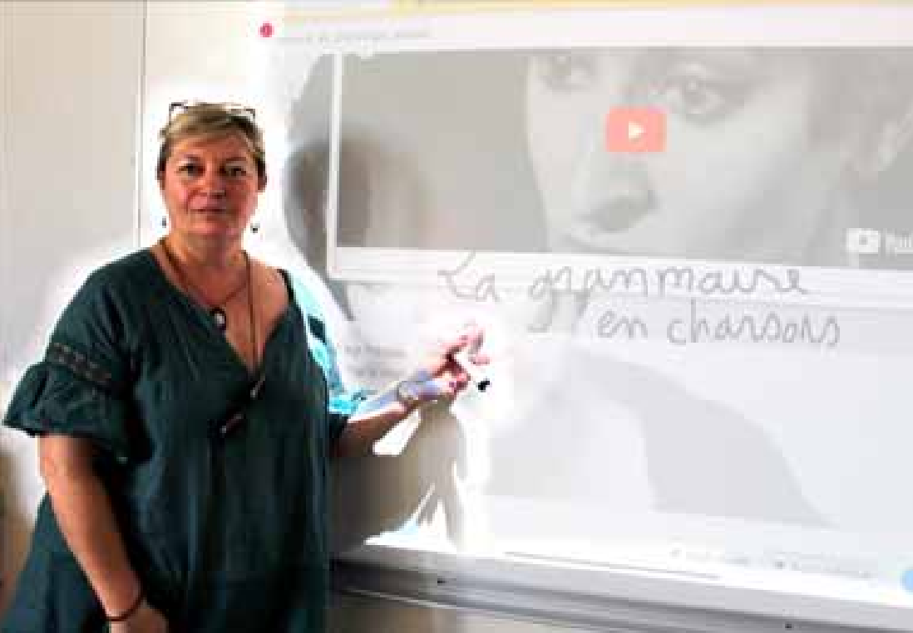

Béarn et Soule
L'école de demain
Marie Soulié est professeur au collège Argote à Orthez. Elle promeut des méthodes d'enseignement innovantes. ARCHIVES F.M.
Orthez - Marie Soulié anime, ce 30 avril, la visioconférence d’ouverture du sommet du numérique en éducation de Montréal
C'est aujourd'hui que Marie Soulié, professeure de français au collège Argote, à Orthez, animera la visioconférence d'ouverture du sommet du numérique pour l'éducation, à Montréal.
Très présente sur les réseaux sociaux, particulièrement active au sein de son collège et plus particulièrement ouverte aux nouvelles méthodes d'enseignements tournées vers le numérique, l'Orthézienne a déjà fait parler d'elle à de nombreuses reprises.
Elle a mis en place la pédagogie inversée (les élèves découvrent d'abord une leçon via une vidéo, avant d'échanger le lendemain avec leurs camarades, en présence du professeur); Najat Vallaud-Belkacem avait rendu visite au collège, après avoir été "ensorcelée" par un projet mené autour d'Harry Potter.